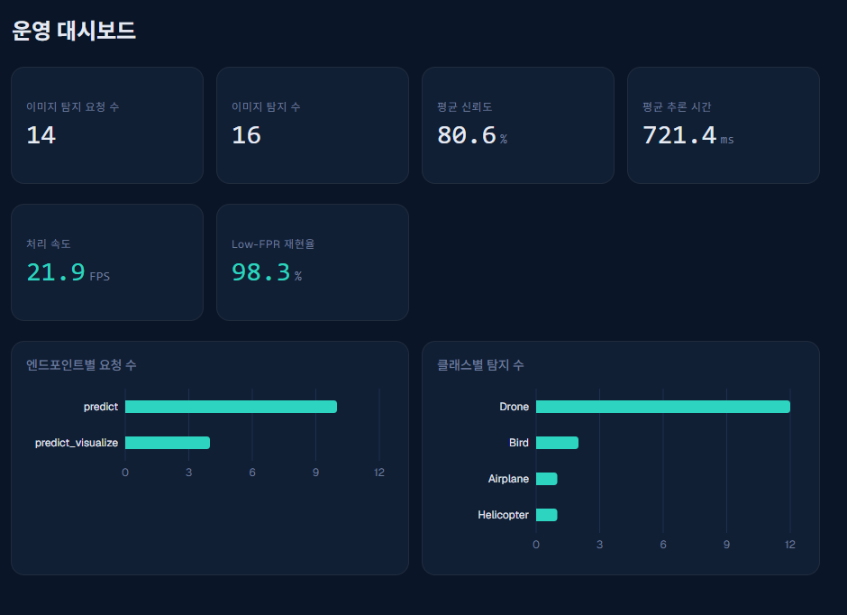
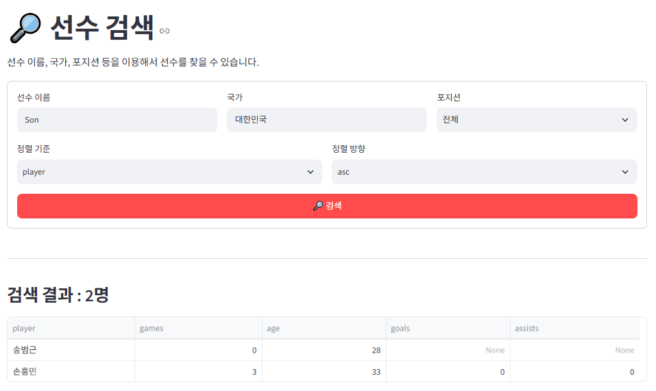
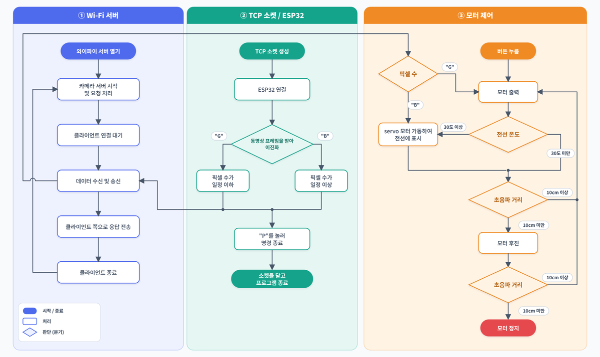

Computer Vision · Robotics · MLOps
로봇의 움직임에서
환경을 인식하는 기술로.
로봇공학을 전공하고, 지금은 객체 탐지 모델을 학습해 API·대시보드·컨테이너까지 갖춘 서비스로 구현하는 과정을 배우고 있습니다. 방산·로봇·자율주행 소프트웨어 분야의 컴퓨터 비전 엔지니어를 목표로 합니다.
PROJECTS
대표 프로젝트
제가 직접 맡은 작업을 중심으로 정리했습니다.

01 · COMPUTER VISION / MLOPS
AegisVision, 드론 탐지 MLOps 파이프라인
드론(안티드론) 객체 탐지 모델을 학습하고, 실험 추적·API 서빙·DB 로깅·인증·컨테이너화·CI/CD까지 운영 가능한 형태로 구축한 개인 프로젝트입니다. (2026.09 ~ 2026.10, 교육과정 중 수행)
- 문제단일 클래스 모델(mAP50 약 0.93)이 강아지를 드론으로 오인하는 오탐을 확인
- 기여데이터 준비, 모델 학습, API·DB 설계와 구현, 컨테이너 구성, CI·테스트, 대시보드까지 전 과정을 직접 수행
- 결과비행기·새·드론·헬리콥터 4클래스로 확장해 mAP50 약 0.99(검증 세트 기준), CPU 환경에서 약 22 FPS
문제 해결 과정 자세히 보기
- 오탐강아지를 드론으로 오인 → 혼동되는 비행체까지 비행기·새·드론·헬리콥터 4클래스로 확장해 재학습
- 학습클래스 수가 달라 기존 가중치를 이어받을 수 없음 → 사전학습 가중치부터 전이학습 / epoch당 약 25분 걸리던 CPU 학습을 GPU(RTX 3070, CUDA)로 전환
- 저장요청 하나를 저장할 때 데이터가 일부만 저장됨 → flush와 rollback으로 하나의 트랜잭션으로 묶음
- 그래프학습 이력 누적 그래프가 목표 epoch 값 때문에 부풀려짐 → 실제로 기록된 step 기준으로 계산
두 모델은 서로 다른 공개 데이터셋의 검증 세트로 평가한 값이라 단순 비교는 어렵고, 실제 환경 영상에서의 성능은 추가로 확인해야 합니다.

02 · TEAM PROJECT
2026 FIFA 월드컵 데이터 API
월드컵 선수·경기·팀 데이터를 PostgreSQL에 저장하고 FastAPI로 제공한 뒤, Streamlit에서 검색과 통계를 볼 수 있게 만든 팀 프로젝트입니다. 이후 FastAPI·PostgreSQL·Streamlit을 Docker Compose로 연계했습니다.
내 기여 Docker 컨테이너 연계 · DB 적재와 검색 문제 해결 · README 작성
트러블슈팅 자세히 보기
- 적재setup_database.py를 다시 실행하면 테이블이 중복됨 → 테이블 이름 대소문자(playerse)를 통일하고, 맨 앞 주석에 묶여 건너뛰어지던 DROP TABLE이 실행되도록 주석 줄을 먼저 제거
- 검색한글 선수 이름은 표기법이 사람마다 달라 검색이 안 됨 → 영문 이름 테이블을 추가하고 or_와 ilike로 한글·영문·부분 일치 검색
- 연결컨테이너 안의 localhost는 자기 자신이라 Streamlit이 FastAPI에 연결하지 못함 → API 주소를 환경변수로 받아 서비스 이름(http://api:8000)으로 호출
- 데이터Docker DB에 데이터가 적재되지 않아 검색 결과가 빔 → 로컬 PostgreSQL과 겹치지 않게 DB 컨테이너 포트를 5433으로 열어 적재
- 경로순위 화면에서 matches.csv를 찾지 못함 → 볼륨 마운트로 코드가 찾는 경로에 파일이 놓이게 수정

03 · CAPSTONE DESIGN
송전탑 전선 점검 로봇
ESP32-CAM으로 받은 영상 프레임을 이진화해 픽셀 수로 판정하고, 판정과 버튼 입력에 따라 모터가 움직이며 서보 모터로 전선에 표시하는 점검 로봇입니다. (2023.03 ~ 2023.07, 캡스톤 디자인)
내 기여 모터·서보 모터 구동 프로그래밍 (영상 판정은 팀원과 함께 진행)
동작 흐름 자세히 보기
- 통신와이파이 서버(카메라 서버)가 클라이언트 요청을 처리하고, TCP 소켓으로 ESP32에 연결해 동영상 프레임을 주고받음
- 판정받은 프레임을 이진화해 픽셀 수가 일정 이하(G)인지 이상(B)인지 구분하고, "P" 입력으로 명령을 끝낸 뒤 소켓을 닫음
- 구동버튼을 누르면 모터를 출력하고, 전선 온도가 30도 이상이면 서보 모터를 가동해 전선에 표시
- 거리초음파 거리가 10cm 미만이면 모터를 후진시키고, 후진 뒤에도 10cm 미만이면 정지
SKILLS
역량
기술 이름보다 프로젝트에서 어떻게 썼는지를 중심으로 적었습니다.
컴퓨터 비전과 실험 관리
YOLO26(Ultralytics)으로 객체 탐지 모델을 전이학습하고, MLflow에 학습별 하이퍼파라미터와 mAP50·precision·recall을 기록해 비교합니다.
근거 프로젝트 · AegisVisionAPI와 데이터베이스
FastAPI 추론 API를 routers·schemas·services·models 레이어로 나눠 구현하고, PostgreSQL에 탐지 결과와 감사 로그를 저장합니다. API Key·JWT 인증과 요청 빈도 제한도 적용했습니다.
근거 프로젝트 · AegisVision배포와 품질 관리
Docker Compose로 api·db·web(nginx)을 구성하고, GitHub Actions에서 이미지 빌드·헬스체크·인증 검증을 자동 실행합니다. AWS Lightsail에 배포해 운영해 보았고, pytest 테스트 10개로 핵심 동작을 확인했습니다.
근거 프로젝트 · AegisVisionROBOTICS
로봇·하드웨어 경험
로봇공학부에서 쌓은 하드웨어 이해가 영상 인식에 관심을 갖게 된 출발점입니다.
자율주행 대회
하드웨어 조립을 맡고, 오픈소스 코드의 속도와 장애물 인식 거리 설정값을 조정했습니다.
2023.05 · 자율주행 대회STM32 디지털 시계
GPIO 제어, 7-Segment 출력, 스위치 입력 처리를 구현했습니다. 버튼을 누르는 동안 시간 카운트까지 멈추는 문제를 찾아, 이전과 현재 버튼 상태를 비교해 눌리는 순간에만 한 번 동작하도록 고쳤습니다.
2022.06 · 마이크로프로세서 수업현장실습
대영코어텍에서 부품 조립 업무를 맡았습니다. 처음 접하는 작업 방식은 확인하며 익혔고, 실습 후 멘토로부터 일 처리가 확실하다는 평가를 받았습니다.
2023 하계방학 · 대영코어텍EDUCATION
교육·학력
로봇공학으로 하드웨어를 배우고, 교육과정에서 데이터와 AI 개발로 넓혔습니다.
빅데이터 분석 플랫폼 개발자 양성과정
Python·SQL 기초부터 FastAPI·Streamlit 기반 웹 서비스, Docker 컨테이너화, GitHub Actions 기반 CI/CD, AWS Lightsail 배포·운영 실습, LangChain 기반 AI 서비스 실습까지 총 900시간 동안 배웠습니다.
2026.05 ~ 2026.10 · 코리아 AI 아카데미대구로봇공학부
C/C++과 STM32 기반 실습으로 하드웨어 제어를 익혔고, 캡스톤 디자인으로 로봇을 직접 구동해 보았습니다.
2018.03 ~ 2024.02 · 경일대학교 · 졸업STUDY LOG
학습 데일리 로그
매일 배운 것을 하루 단위로 기록하고 있습니다. 월별 요약과 원본 일지 링크를 모았습니다.
FastAPI·HTML 복습, SQL 기초
FastAPI와 HTML/CSS 수업 내용을 복습하고, SQL 기초와 SQLD의 JOIN·기출 문제를 풀었습니다. 판다스로 엑셀 파일을 읽고 병합·시각화하는 것도 해 봤습니다.
2026.06.15 ~ 06.30 · 12일 기록 · 월별 일지 보기데이터 수집·DB·모델링 입문
CSV와 API로 데이터를 수집해 PostgreSQL에 저장하는 파이프라인과 SQLAlchemy 모델, pytest 단위 테스트를 익혔습니다. 전처리·EDA 뒤에는 선형 회귀부터 랜덤포레스트, 로지스틱 회귀, k-means까지 모델링을 배우고 Streamlit도 실습했습니다.
2026.07.01 ~ 07.31 · 22일 기록 · 월별 일지 보기모델 서비스화와 Docker 시작
통신 고객 이탈 모델을 학습·저장하고, 대구 지하철 승하차 대시보드를 Streamlit으로 만들었습니다. JWT 인증 Todo API, Todo 카테고리 분류 ML, ISBN 인식 책장, 월드컵 팀 프로젝트를 진행하며 Docker를 시작했습니다.
2026.08.03 ~ 08.31 · 20일 기록 · 월별 일지 보기Docker·CI/CD와 MLOps
GitHub Actions 자동 배포와 AWS Lightsail 배포를 실습하고, 대출 승인 예측 모델로 API 서빙·컨테이너화·CI·드리프트 감지와 재학습을 익혔습니다. 9월 15일부터 드론 탐지 AegisVision을 시작해 FastAPI·DB·인증·경보·비디오 탐지를 구현했습니다.
2026.09.02 ~ 09.30 · 18일 기록 · 월별 일지 보기AegisVision 마무리와 배포
React 대시보드(경보, 탐지, 학습 이력 화면 등)를 만들고, GitHub Actions와 AWS Lightsail로 수동 배포에서 자동 배포, Compose 배포까지 진행했습니다. 발표자료를 만들고 서버용 환경 변수 파일을 준비했습니다.
2026.10.01 ~ 10.13 · 8일 기록 · 월별 일지 보기전체 학습일지
6월 15일부터 10월 13일까지 하루 단위로 정리한 기록입니다. 목차(README)에서 월별 파일을 모아 볼 수 있습니다.
GitHub · Deily_log · 저장소 열기MOTIVATION
지원 동기와 성장 방향
로봇공학을 공부하며 로봇이 제대로 움직이려면 하드웨어 제어만큼 주변 환경을 정확히 인식하는 일이 중요하다는 것을 알게 되었습니다. 방위산업과 로봇, 자율주행처럼 인식 기술의 정확도가 시스템 전체의 신뢰와 직결되는 분야에서, 전공에서 익힌 하드웨어 이해와 교육과정에서 배운 데이터 처리 기술로 영상 인식 문제를 해결하고 싶습니다. 입사 후에는 시스템 구조를 먼저 익히고, 오류가 생기면 모델만 바꿔 보는 데서 그치지 않고 데이터와 입력 환경까지 함께 확인해 원인을 찾겠습니다. 장기적으로는 전처리부터 모델 학습·적용·시스템 연동까지 이해하고, 현장의 인식 오류를 스스로 분석해 개선하는 엔지니어로 성장하겠습니다.
CONTACT
컴퓨터 비전 엔지니어로
첫걸음을 준비하고 있습니다.
방산·로봇·자율주행 소프트웨어 분야의 신입 기회를 찾고 있습니다. 궁금한 점이 있다면 편하게 연락해 주세요.